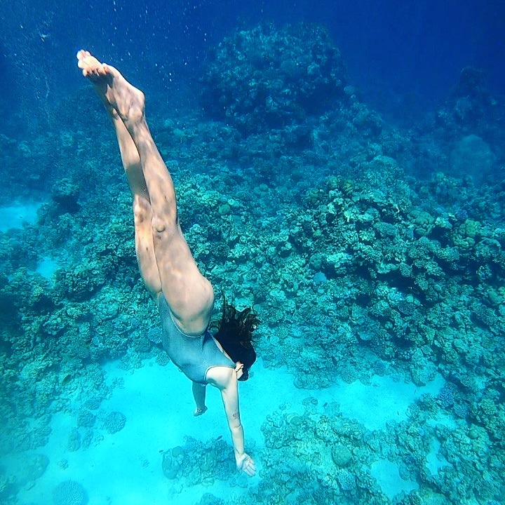
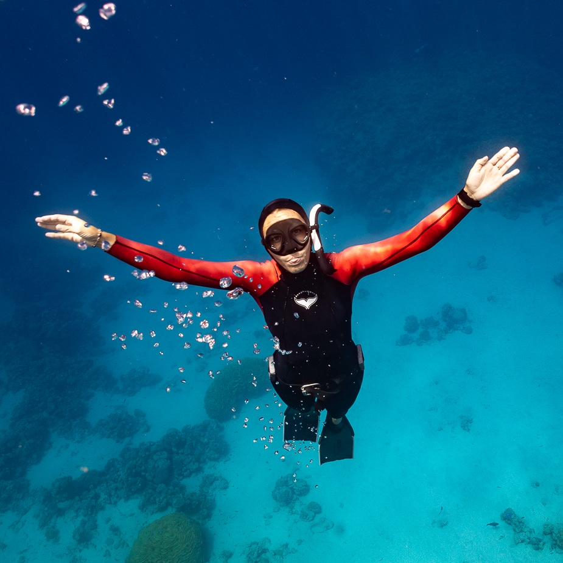
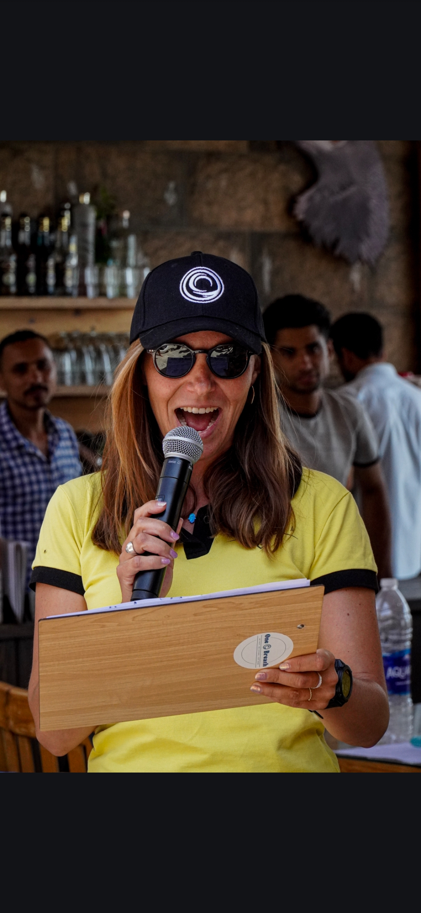
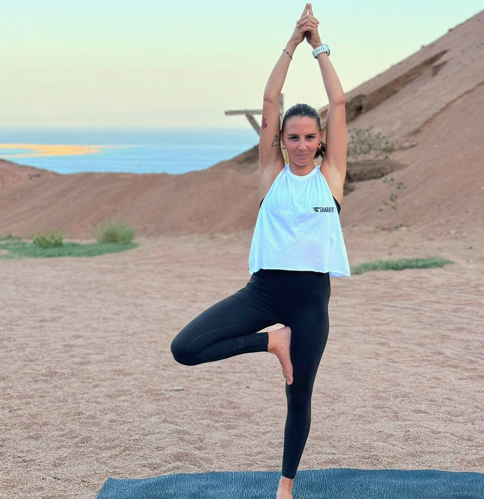
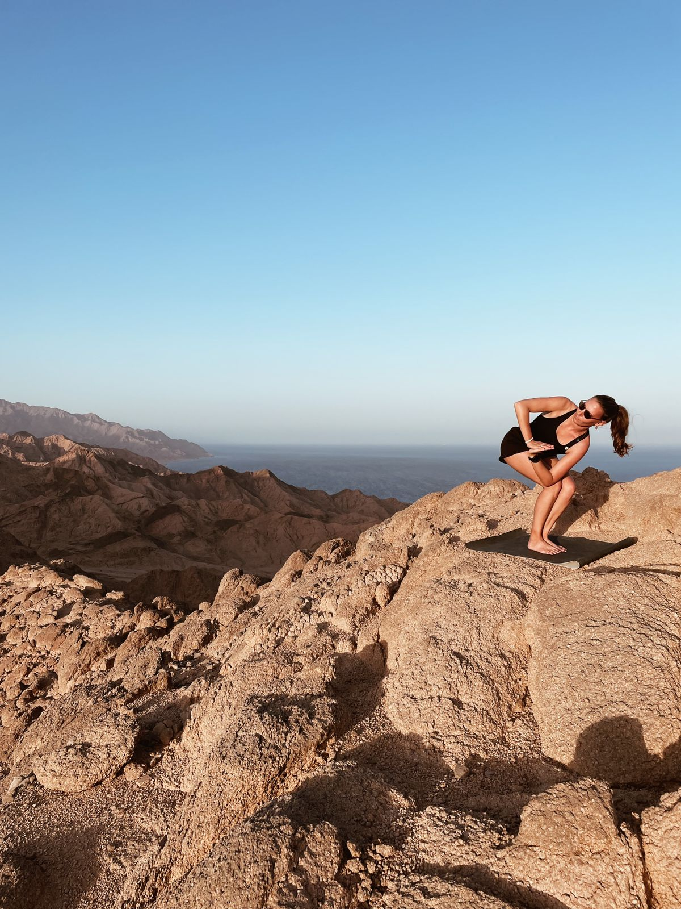
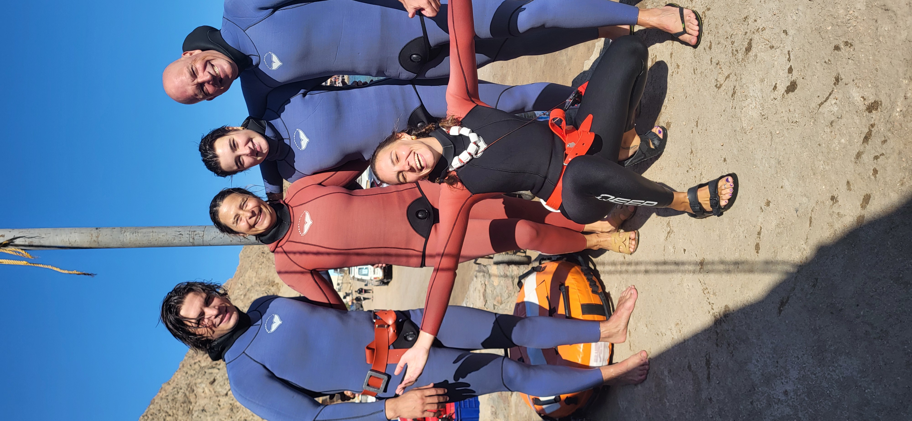
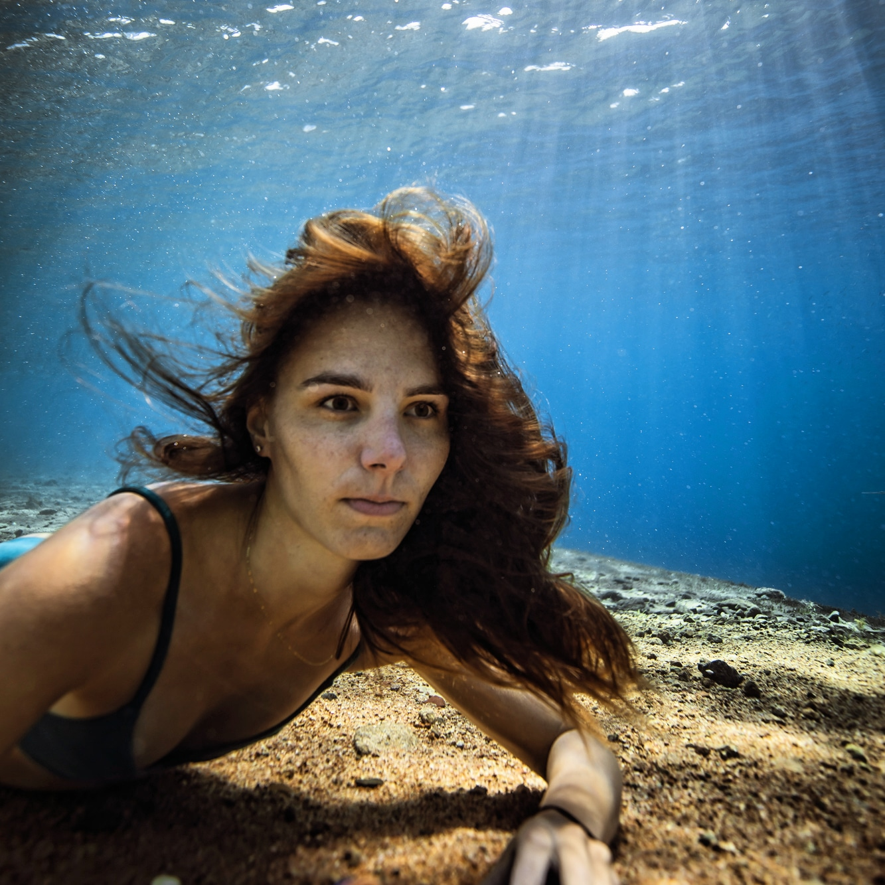
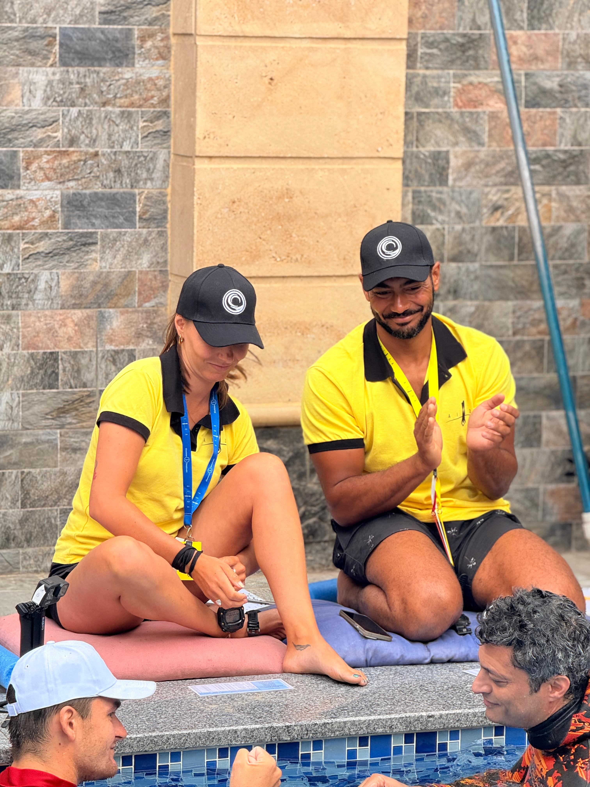

Who am I
Hi, I am Clara Katz — a French AIDA Master Freediving Instructor, certified yoga teacher, and AIDA judge for both pool and depth competitions.
I am based in Dahab, a magical town on the Red Sea that has become a global hub for freedivers and a sanctuary for those seeking inner stillness and a close connection with nature.
With a deep passion for breath, movement, and the ocean, I guide students through their freediving journeys — from first fins in the water to advanced depth training — always rooted in safety, mindfulness, and personal growth. My approach blends the discipline of AIDA standards with the balance, patience, and awareness cultivated through yoga.
My approach
Deep breath, dive in, and welcome to your next chapter.
I blend rigor, conscious breathing, and connection to place to build a steady, calming progression.
Between silence, breath, and sandy horizons.
Each session is designed to build confidence, refine technique, and offer a unique sensory experience.
- Mental preparation & breathing
- Dive technique and safety
- Marine exploration and desert rituals

Let's dive deeper
Whether you dream of diving deep into the Blue Hole, improving your technique, or simply learning to relax and reconnect with yourself, I'm here to guide you.

Competitions
Since 2023, I have been an active AIDA judge, certified for both pool and depth competitions — ensuring fairness, safety, and integrity during official events.

Yoga
I am a certified Hatha Yoga teacher, trained at the Sivananda Ashram in India. Breathwork, body awareness, and relaxation — a powerful complement to freediving.

Gallery




Contact
Let's go together.
Write to me for dates, programs, or collaborations.
I'll get back to you as soon as possible.